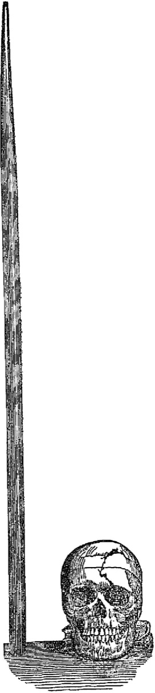
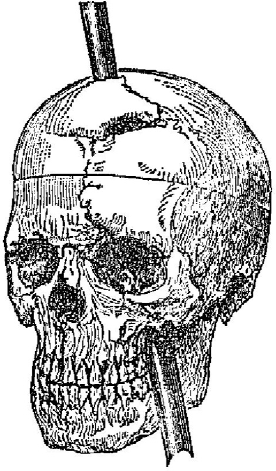
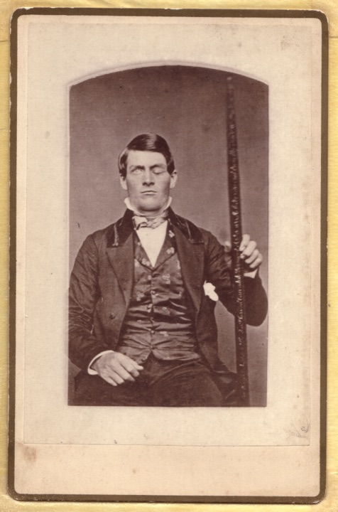
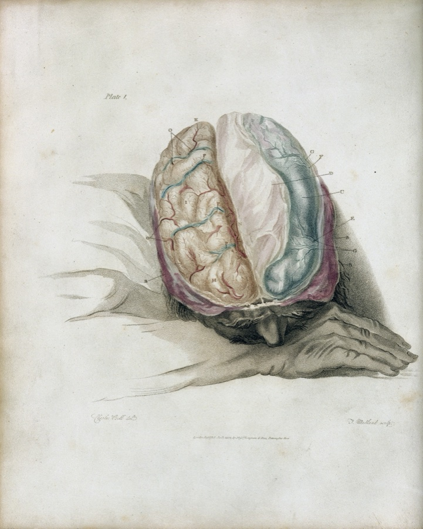
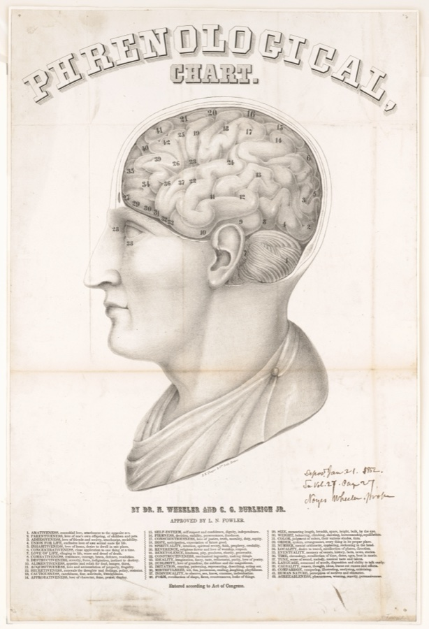
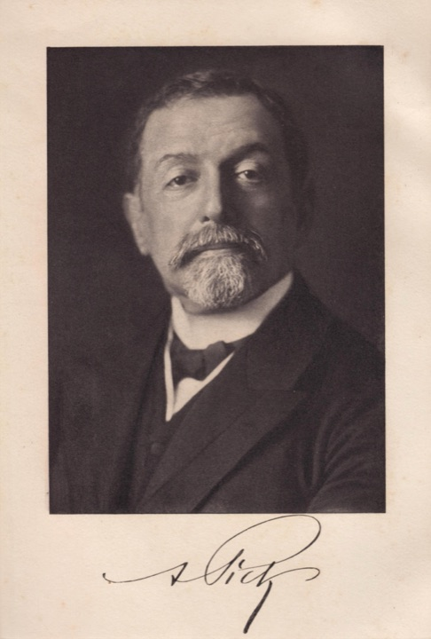

脳と意識 / 自己と人格
突然の事故、薬の副作用、加齢、酔った夜。「人が変わる」と私たちが言うとき、変わったのは何で、何が残ったのか。
9月13日、米バーモント州キャヴェンディッシュで鉄棒がフィニアス・ゲージの頭を貫通。生還した彼の人格変化が、近代の脳と人格の議論を始動させた。
同年、欧州各地で「諸国民の春」と呼ばれる革命が連鎖。マルクスとエンゲルスが『共産党宣言』を発表。スイス連邦憲法が前日9月12日に発効。
読みながら自分自身の「芯」を試すテストと、「自分」を構成するものを一つずつ「ない」にしてみる思考実験を含む。所要約14分。
普段は穏やかな同僚が、酒の席で別人のように声を荒げるのを見たことがある。翌朝、本人はけろりとして「昨日はちょっと飲みすぎた」と笑う。
誰もが似たような場面に立ち会っている。上司の前と家族の前で違う顔。徹夜明けの自分と週末の自分。失恋直後のあの数日と、半年後の自分。私たちは無意識に、それらを「あの人」「自分」という一つの容れ物にまとめている。
だが、その容れ物の中身を一つずつ取り出していくと、最後に残るはずの「芯」は、思いのほか頼りない。
「本当のその人」と私たちが呼んでいるもの。それが脳・状況・薬・時間でどう揺れ動くかを、あなた自身の芯で確かめる。フィニアス・ゲージから現代の臨床まで、350年分の問いを通して。
1848年9月13日、午後4時半。アメリカ、バーモント州キャヴェンディッシュの郊外。鉄道工事の現場では、岩盤を爆破するための穴に火薬を詰める作業が進んでいた。25歳の現場監督、フィニアス・ゲージは火薬と砂を交互に詰める手順に慣れきっていた。長さ109センチ、重さ6キロの鉄棒で、地中の火薬を突き固める作業を、その日も繰り返していた。
何かのはずみで火花が散った。火薬が爆発し、鉄棒は弾丸のようにゲージの左頬の下から侵入し、左前頭葉、特に眼窩前頭皮質眼窩前頭皮質(orbitofrontal cortex / OFC)前頭葉の下側、目の奥のすぐ上にある領域(おでこの裏あたり)。情動と意思決定をつなぐ場所として知られ、ここが損傷すると、行動の抑制や社会的な判断が変わると報告されている。「OFC」と略される。を破壊しながら頭頂部から抜けた。鉄棒は約25メートル後方に落下した。
図1 / Harlow 1868年詳述報告の原図

図1a: 鉄棒(左)と頭蓋骨(右)を実寸で並べた比較図。鉄棒の長さが頭部全体に届いている

図1b: 頭蓋骨の前面・側面図。鉄棒が通った方向、骨折線、前頭骨の脱出部位が示される
Image: John M. Harlow (1868), Recovery from the passage of an iron bar through the head / Public Domain, via Wikimedia Commons
驚くべきことに、ゲージは数分後には自分の足で歩いて荷馬車に乗り、近くの宿に運ばれた。意識はあった。話もできた。主治医のジョン・ハーロウが到着する頃には、椅子に座って自分の状況を語っていた。3ヶ月後、ゲージの肉体的回復はほぼ完了する。歩ける。話せる。手は動く。鉄棒が貫いた側の左目は失明したが、右目の視覚は保たれた。

画像: Tara Gage Miller (2010 reproduction) / Public Domain, via Wikimedia Commons(リサイズ済み)
問題は、回復した彼が、もはや事故前のゲージではなかったことだ。ハーロウが20年後の1868年に発表した詳述報告には、こう記されている。事故前のゲージは、雇用主に「最も有能で能率的な現場監督」と評されるほど、几帳面で、計画を最後まで遂行する男だった。事故後の彼は、衝動的で、礼節を失い、約束を守らず、罵詈雑言を口にし、計画を立てては放棄した。
"The equilibrium or balance, so to speak, between his intellectual faculties and animal propensities, seems to have been destroyed. ... His friends and acquaintances said he was 'no longer Gage.'"
いわば彼の知的能力と動物的衝動の均衡が、破壊されてしまったかのようであった。…彼の友人と知人たちは、彼を「もはやゲージではない」と言った。
— John Martyn Harlow, Recovery from the passage of an iron bar through the head, 1868
フィニアス・ゲージ
Phineas P. Gage, 1823–1860
米ニューハンプシャー生まれの鉄道工事監督。25歳のときの事故により、神経科学史上最も語られ続ける症例となった。事故から12年後、てんかん発作を経て36歳で死去。死後7年、母の同意を得て遺体は発掘され、頭蓋骨と鉄棒はハーバード大学のWarren Anatomical Museumに保管されている。
Photo: Tara Gage Miller / Public Domain, via Wikimedia Commons
ジョン・マーティン・ハーロウ
John Martyn Harlow, 1819–1907
米バーモントの田舎医師。事故直後にゲージを治療し、1848年に事故の経過を、1868年に20年後の人格変化を記録した。一介の地方医として、後の脳科学の最重要症例を世に残した。記録は控えめで、症例の意味を大げさに語らなかった点が後世に評価されている。
図2 / 事故前と事故後、ゲージのまわりにあった言葉
これがハーロウ1868年報告から再構成した、事故前後のゲージ像。語彙のほとんどが反転している。ただし、近年の研究(Macmillan 2000)では、ゲージは後年チリで駅馬車御者として安定した生活を送り、ある程度「いつものゲージ」に戻った可能性も指摘されている。「人格は永久に破壊された」という単純な物語は、史料を超えて語られすぎた可能性がある。
この事故が当時の医学・哲学に与えた衝撃は、二つあった。第一に、脳の特定の部位が、特定の機能を担っているという考え(機能局在説)に強い証拠を与えた。第二に、もっと深刻な問いを残した。記憶も、言語も、知能も保たれているのに、「ゲージらしさ」が消えた。では、その「ゲージらしさ」は、どこにあったのか。
よくある誤解
ゲージは事故で「廃人」になり、人生を棒に振った。
実際は
話す力・歩く力・記憶は保たれ、後年は南米で駅馬車御者の仕事を10年近く続けた記録もある。事故が彼の人生を奪ったかは、史料的にも論争中だ。
よくある誤解
ゲージは「凶暴な別人」になった。
実際は
ハーロウの記述は「気まぐれ」「礼節を欠く」「計画を続けられない」が中心で、暴力性の記述は限定的。後の脚色で「凶暴化」のイメージが膨らんだ部分が大きい。
よくある誤解
「人が変わる」のは脳に大きな損傷があった時だけだ。
実際は
薬剤の副作用、慢性的な睡眠不足、脱水、強いストレス、加齢による前頭葉機能の変化でも、人格に近い部分が動く。違いは程度の差だ。
ゲージのような大事故は、誰にでも起こることではない。だが、もっと小さな「揺らぎ」なら、私たちは毎日のように経験している。徹夜明けの判断は雑になる。屈辱を受けた直後の自分は、いつもより冷たくなる。酔った夜は普段なら言わないことを口にする。これらは「自分が変わった」のか、それとも「いつもの自分の別の側面」なのか。
これは思考実験ではなく、自分自身でデータを取れる問いだ。ここから二つの体験を用意した。一つ目は、自分が選んだ「芯」を、ストレス状況に通したときに何が残るかを見るテスト。二つ目は、要素を一つずつ削除していき、どこまでが「自分」かを問う実験。正解はない。残るのは、あなた自身の判断だ。
芯は、状況に対してどう反応しただろうか。揺るがなかった特性、思いのほか崩れた特性、両方あったはずだ。ここで疑問が立ち上がる。状況が変わるたびに揺らぐものを、私たちは「芯」と呼んでいいのか。それとも、揺らぎながらも何らかの一貫性が残るからこそ、それは「芯」と呼べるのか。
次の実験では、もっと根本に降りる。記憶、抑制、言語、感情の起伏、身体感覚——「自分」を構成しているこれらの要素を、一つずつ取り去っていったらどうなるか。それぞれが「ない」自分の姿には、現実の臨床例が一つずつ対応している。
Test 02 / 削除実験
「自分」を構成しているもの。一つずつ「ない自分」を選んで、対応する臨床例と向き合ってみる。
下の5つから、まず一つ選んでカードをタップする。カードが反転して、その軸が「ない」自分の姿が、現実の臨床例として現れる。
削除実験で並んだのは、すべて現実の臨床事例だ。記憶を失ったアルツハイマー型認知症の人を前にして、家族は「お父さんはまだお父さんだ」と言うこともあれば、「もう別の人になった」と感じることもある。前頭側頭型認知症で抑制を失った人の家族も、同じ揺れに直面する。この「まだ本人だ」と「もう別人だ」の揺れは、哲学者の思考実験ではない。今も家庭の中で、誰かが毎日向き合い続けている現実の悩みだ。
人格に近い部分を支えていると言われる脳の領域は、おおむね前頭葉、なかでも腹側の眼窩前頭皮質(OFC)と内側前頭前野(mPFC)だ。ゲージの鉄棒が貫いたのも、この領域だった。1990年代以降、機能的MRIや病変研究が積み重なり、ここが「感情と意思決定をつなぐハブ」であるという見方が定着していった。

Image: Charles Bell (1802), The Anatomy of the Brain / Wellcome Collection L0025507 / CC BY 4.0, via Wikimedia Commons
なぜここを傷つけると人格が動くのか。1994年、神経学者のアントニオ・ダマシオAntonio Damasio(1944–)ポルトガル系米国人の神経学者。アイオワ大学を経て南カリフォルニア大学。情動と意思決定の関係を体系化した『デカルトの誤り』(1994)で広く知られる。が『デカルトの誤り』のなかで、一つの仮説を提示した。ソマティック・マーカー仮説somatic marker hypothesis意思決定の場面で、過去の体験で結びついた身体反応(心拍、胃の不快感、緊張など)が、選択肢に「重み」を与えるという理論。眼窩前頭皮質はこの身体マーカーを呼び出すハブとされる。と呼ばれるこの理論は、選択の場面で身体が出すシグナル——心拍、緊張、胃の違和感——が、過去の記憶と結びついて、選択肢に「重み」を与えていると主張する。
具体的な流れはこうだ。①ある状況に直面し、選ばなければならない。②身体が先に反応する——心拍が上がる、胃の違和感、緊張、あるいは安堵。③前頭葉のOFCが、過去の体験と現在の身体シグナルを結びつける。④その結果、選択肢に「重み」が付き、決定が出る。OFCを損なった人は、損得の計算は完璧にできるのに、選べなくなる、どうでもよくなる、という状態になる。これは、感情と論理が分離できないことの、臨床的な証拠だった。
アントニオ・ダマシオ
Antonio Damasio, 1944–
ポルトガル系米国人の神経学者。アイオワ大学で長年、前頭葉損傷例(ゲージ症例の現代版)を研究し、1994年の『デカルトの誤り』で「理性は感情の身体的フィードバック抜きには機能しない」と論じた。哲学・神経科学・経済学の交差点に立つ稀有な書き手。
同じ前頭葉が、別のかたちで揺らぐこともある。パーキンソン病でドーパミンを補う薬(ドーパミンアゴニスト)を服用している人のうち、約17%にギャンブル依存・買い物依存・性的衝動・過食といった衝動制御障害が現れる(Weintraub et al., 2010)。本人は止めようとして止められない。家族は「夫が変わった」と感じる。だが、薬を変えると症状は消えることが多い。これを「本当のその人」が出てきたと言うのか、「薬で別人化した」と言うのか。
前頭側頭型認知症(FTD)の脱抑制も、同じ問いを家族に突きつける。長年穏やかだった人が、ある時期から食卓のマナーを失い、突然怒鳴り、社会的に不適切な言動を繰り返す。脳の前頭葉と側頭葉が萎縮していく病気だ。家族は混乱する。「これは病気のせいで、本人は本人のままだ」と言い聞かせる人もいれば、「もうあの人ではない」と覚悟を決める人もいる。どちらも、間違いではない。
脳科学が登場するずっと前から、哲学者たちは「同じ人」とは何かを問い続けてきた。1689年、英国の哲学者ジョン・ロックは、『人間知性論』第2巻27章で、一つの大胆な答えを出した。同じ人格であるとは、同じ意識・記憶でつながっていることだ。身体ではなく、魂でもなく、記憶の連続性こそが「同じ人」を作る。
ジョン・ロック
John Locke, 1632–1704
英国経験論(=知識は生まれつきではなく経験から作られる、という考え方)の祖。『人間知性論』(1689)で「人格(person)」を「人間(man)」と区別し、person は forensic term(法的・道徳的に責任を問える単位)であると論じた。同じ意識でつながっていれば、それは同じ人格だ——この素朴な定義が、その後350年の議論の起点になる。
Photo: Godfrey Kneller (1697) / Public Domain, via Wikimedia Commons
ロックの定義は、すぐに反論を呼んだ。眠っている間は意識が途切れる、では翌朝の自分は別人なのか。記憶が部分的に消えただけで、別人になるのか。批判は止まなかったが、ロックの基本枠組み——人格とは記憶・意識の連続体である——は、現在の議論の出発点に居座り続けている。
19世紀に入ると、ロックとは逆方向の試みが現れた。1810年代、ドイツの解剖学者フランツ・ヨーゼフ・ガルとその弟子シュプルツハイムが、性格や知性は脳の特定の部位に局在し、その大きさが頭蓋の凸凹に反映されると主張した。これが骨相学(phrenology)と呼ばれた運動だ。頭の形を触って性格を読むという結論は、19世紀末までに完全に否定された。だが、その核心——脳には機能ごとに分かれた部位がある——は、ゲージ事例(1848年)を経由して、現代神経科学の基礎の一つになっていく。

Image: Phrenological chart (1862) / Library of Congress, LCCN 2003689349 / Public Domain, via Wikimedia Commons
19世紀末になると、別の角度からロックの公式を揺さぶる発見が現れる。1892年、プラハの精神科医アルノルト・ピックが、記憶と知能は比較的保たれているのに、人格と社会判断と言語が崩れていく一群の患者を記述した。後に「ピック病」と呼ばれ、現在の前頭側頭型認知症(FTD)の起源となる症例群だ。記憶があれば人格は同じというロックの公式は、現実の臨床から異議を投げかけられる。

アルノルト・ピック
Arnold Pick, 1851–1924
チェコ・ドイツ系の精神科医。プラハのカレル大学。1892年、当時の主流だった記憶中心の認知症像とは違うタイプの症例を報告した。記憶よりも先に、人格・言語・社会判断が崩れていく一群の患者だ。これが後にピック病、さらに前頭側頭型認知症(FTD)へと整理される。「記憶=人格」というロックの公式に、別の角度から異議を投じた一人。
Photo: Anonymous (c.1922), Zeitschrift für die gesamte Neurologie und Psychiatrie 76 / Public Domain, via Wikimedia Commons
この議論の現代的な完成形を作ったのが、英国の哲学者デレク・パーフィットだ。1984年の主著『理由と人格』で、パーフィットは思考実験を駆使して、ロックの直観をさらに先に進めた。完全な脳のコピーが二人いたらどちらが本人か。テレポーターで分子を再構成された自分は本人か。これらの問いを通して、彼は逆説的な結論に達する。
デレク・パーフィット
Derek Parfit, 1942–2017
英国の道徳哲学者。オックスフォードのオール・ソウルズ・カレッジ。1984年の『理由と人格』で、人格の同一性は「それほど重要ではない」と論じた。重要なのは Relation R——記憶・性格・意図のゆるやかなつながりの束だ。同一性が成立しなくても、Rが連続していれば、生きる理由は失われない。2017年逝去。
パーフィットの結論はこうだ。「同じ人かどうか」を厳密に決める基準は、結局のところ存在しない。でもそれは絶望ではない。重要なのは、記憶・性格・意図のつながりが、ある程度連続していること。完全な同一性は不要だ。彼はこの連続性の束を Relation R と呼んだ。Rがあれば、私たちは生きていける。
ロックから今日まで、340年あまり。その間に、フィニアス・ゲージが鉄棒に貫かれ、アルノルト・ピックがピック病(後のFTD)を記述し、ダマシオがソマティック・マーカー仮説を提示し、Weintraubがドーパミンアゴニストの副作用を統計化した。哲学と神経科学は、同じ問いの両側から穴を掘り続けている。
1689
ロック『人間知性論』第2巻27章
人格は記憶・意識の連続体である。「人(man)」と「人格(person)」を分けるという思考の枠組みが提示された。
1848
フィニアス・ゲージ事故
9月13日、バーモント州キャヴェンディッシュ。鉄棒が左前頭葉を貫通。「同じ脳ではないと、同じ人格でもない」という証拠が、突然世界に投げ込まれた。
1868
ハーロウの詳述報告
事故から20年後、主治医が人格変化の詳細を医学誌で発表。「no longer Gage」の一節が、神経科学のあらゆる教科書に引き継がれることになる。
1892
アルノルト・ピックがピック病(後のFTD)を記述
前頭葉と側頭葉が萎縮し、記憶よりも先に人格と社会判断が変わるタイプの認知症。1922年に「ピック病」と命名された。
1984
パーフィット『理由と人格』
「人格の同一性は、それほど重要ではない」。重要なのは Relation R——記憶・性格・意図のつながりの束だ、という還元主義的な結論。
1994
ダマシオ『デカルトの誤り』
ゲージ事例を冒頭に据え、ソマティック・マーカー仮説を提示。「理性と感情は分離できない」というメッセージが、神経科学・哲学・経済学に同時に届いた。
1998
FTLD臨床診断基準(Neary criteria)
前頭側頭型認知症の診断基準が国際的にまとめられた。脱抑制・社会判断の低下・感情の鈍化が中核症状とされる。
2010
Weintraub他、ドーパミンアゴニスト性ICDの大規模調査
パーキンソン病患者3090人。アゴニスト服用群の17%に衝動制御障害。「薬で人格が動く」現象が統計的に確認された。
ここまで歩いてきて、見えてきたことがある。「本当のその人」と私たちが呼んでいるものは、固定された不変の本質ではない。だからといって、ただの幻想でもない。それは、慣性を持って一定方向に動く、動的な構造のようなものだ。普段は安定しているように見える。寝不足や酔いで少し揺れる。強いストレスで大きく揺れる。脳の損傷や薬剤で、ときに別の方向へずれる。そして、しばしば元の軌道に戻る。この『揺らぎながら束として一貫している自己』という見方は、決して新しいものではない。
"...nothing but a bundle or collection of different perceptions, which succeed each other with an inconceivable rapidity, and are in a perpetual flux and movement."
[自己とは]さまざまな知覚の束、あるいは集合にすぎず、想像を絶する速さで互いに継起し、絶えざる流動と運動のうちにある。
— David Hume, A Treatise of Human Nature, 1739 (Book I, Part IV, §VI)
作品・概念への登場
アントニオ・ダマシオ『デカルトの誤り』(1994)
ゲージ事例を冒頭に置き、現代の眼窩前頭皮質損傷例(EVRなど)を並べた。一般読者層に「感情と理性は不可分」という考えを浸透させた起点。
デレク・パーフィット『理由と人格』(1984)
分裂・融合・テレポートといった思考実験を駆使し、人格の同一性を Relation R へ還元する。哲学だけでなく、後の意識研究やSF設定にも影響。
日常言語の「酔った時の自分」「素面の自分」
私たちは無自覚に、自分を複数の状態の集合として語っている。「あの時の自分は本気じゃなかった」「あれが素の自分」といった言い回しは、すでに芯の動的な性質を前提にした言語だ。
短編映画『Gage』(2014)、ドラマ『Hell on Wheels』ほか
フィニアス・ゲージは脳科学の症例として教科書に載るだけでなく、19世紀の鉄道工事の現場を背景にしたフィクションでも繰り返し描かれている。
最後に、もう一つだけ。ここまで読んで、「芯はあるのか、ないのか」をはっきりさせたかった人もいるかもしれない。だが、形而上学形而上学(metaphysics)世界の根本にある「何が本当に存在するのか」「同一性とは何か」を問う哲学の分野。経験や観測を超えた、より本質的な問いを扱う。の答えより、明日の朝に重みを持つのは別のことだ。あなたが家族を、友人を、自分自身を、毎日「あの人」「私」として扱い続けている事実。その実践が、人格を作っているとも言える。脳が変わっても、薬が変わっても、加齢で性格が動いても、誰かが「あなたは、まだあなただ」と扱い続ければ、その関係はそこに残る。それは形而上学の答えより、ずっと頑丈だ。
ゲージ事例の一次資料2本(初報1848、詳述1868)を解説したPMCの総説。「no longer Gage」の出典を含む。
Antonio Damasio, Descartes' Error: Emotion, Reason, and the Human Brain
ゲージ事例を冒頭に置き、現代の前頭葉損傷例(EVR)と統合し、ソマティック・マーカー仮説を提示した一般向け著作。
John Locke, An Essay Concerning Human Understanding, Book II, Chapter 27 "Of Identity and Diversity"
人格と人間の区別、記憶を基準とする人格同一性の理論。後の議論すべての出発点。
David Hume, A Treatise of Human Nature, Book I, Part IV, §VI "Of personal identity"
自己を「知覚の束(bundle)」として捉える、いわゆる「束理論」の古典的源泉。記事中の pull-quote 出典。
Derek Parfit, Reasons and Persons
人格の同一性は「それほど重要ではない」。Relation R(記憶・性格・意図のつながり)が、同一性に代わる重要な概念。
Frontotemporal lobar degeneration: a consensus on clinical diagnostic criteria
前頭側頭型認知症(FTD)の国際的な臨床診断基準。脱抑制・社会判断の低下・感情の鈍化を中核症状とした。
Impulse Control Disorders in Parkinson Disease: A Cross-Sectional Study of 3090 Patients
パーキンソン病患者の13.6%に衝動制御障害。ドーパミンアゴニスト服用群では17.1%、非服用群では6.9%(オッズ比2.72)。
Malcolm Macmillan, An Odd Kind of Fame: Stories of Phineas Gage
ゲージの後年(チリでの駅馬車御者など)を含む一次史料を網羅。「人格は永久に破壊された」という単純な物語を史料的に修正した重要書。
e. Tamaki